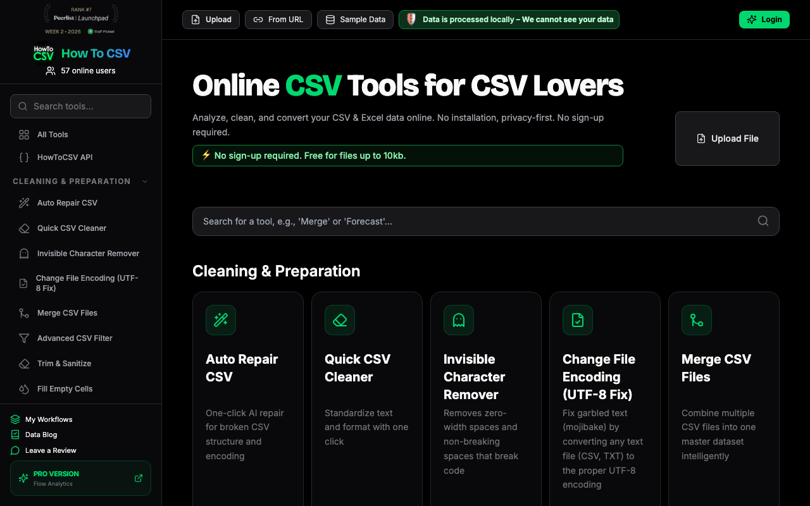
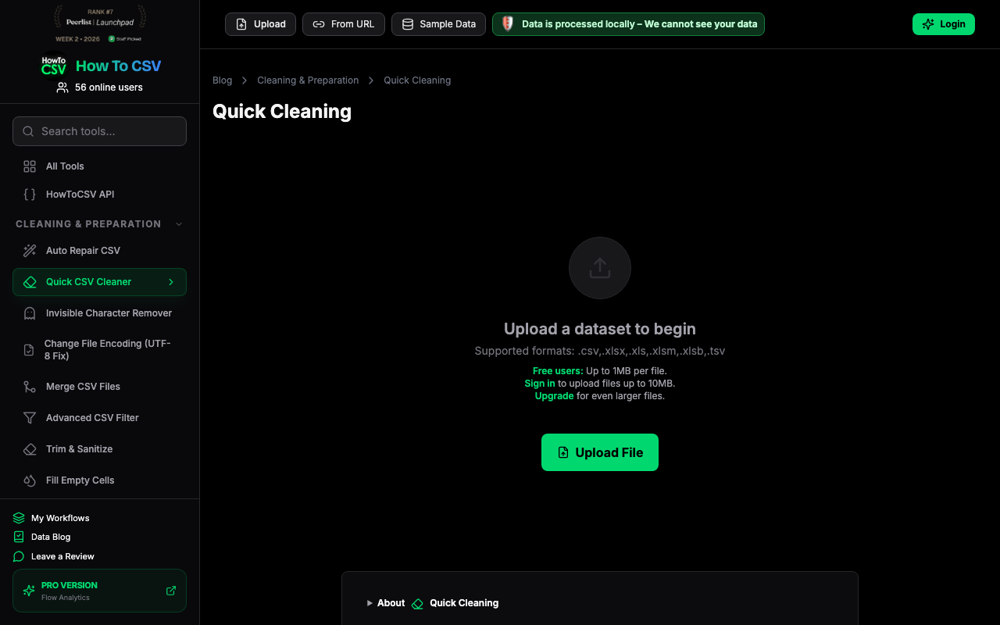
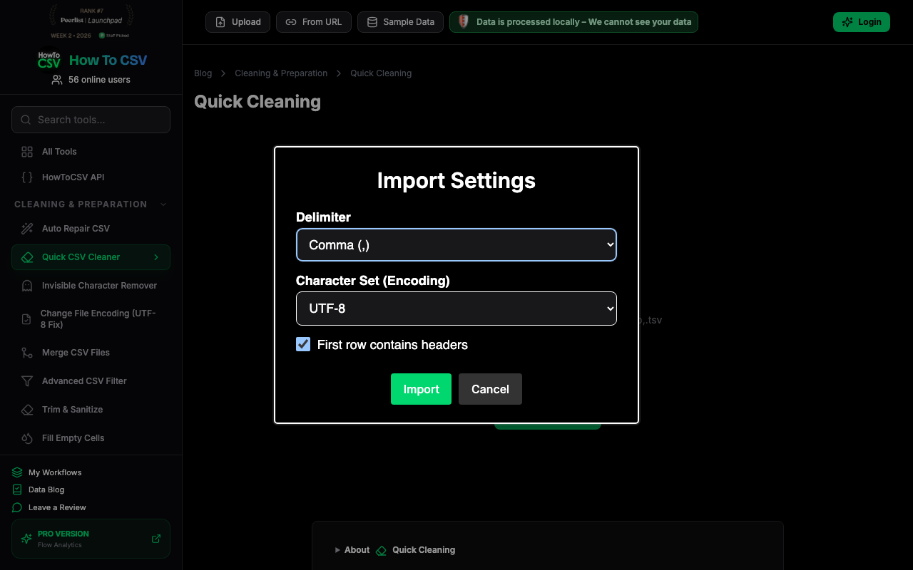
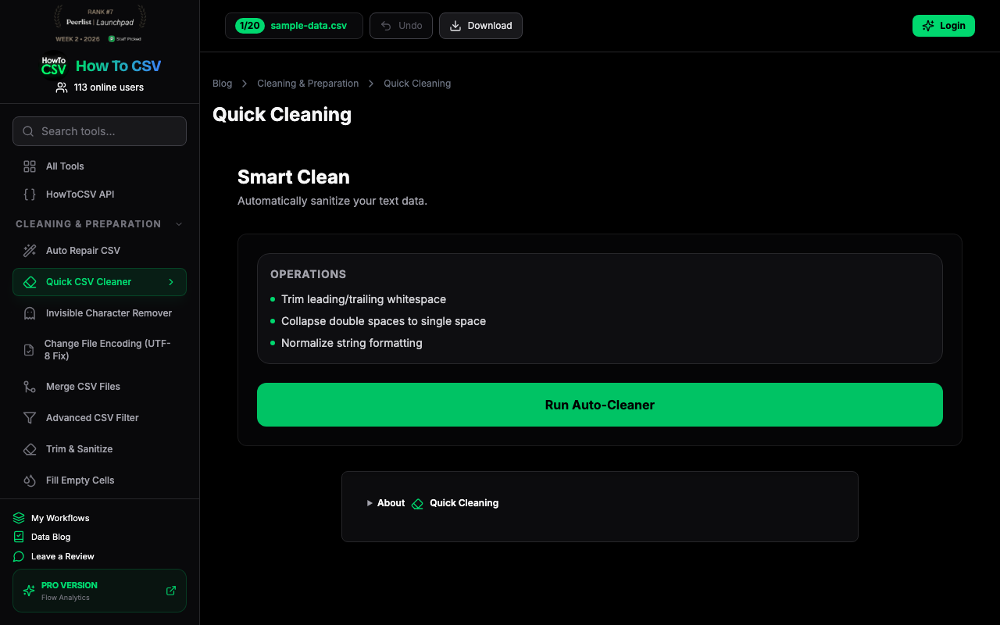
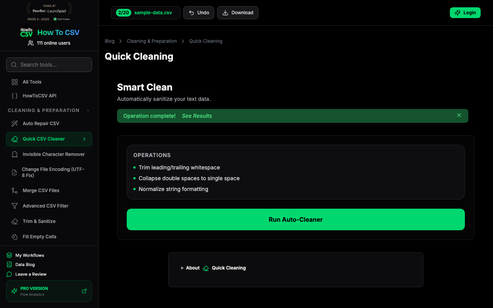
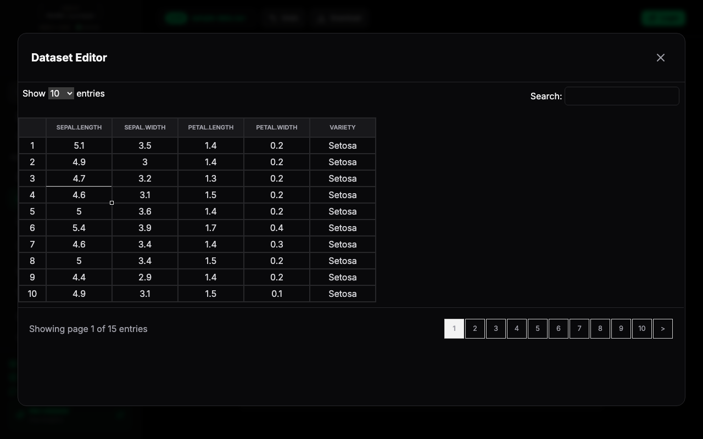

I've just arrived and identified the tool I want to use. I need to load sample data and run a cleaning operation to see how well it works and if I can trust it with my data.

I'm on the Quick Cleaning page now. It says data is processed locally, which is reassuring for my work. I'll use the sample data to see how this handles messy rows before I trust it with a real export.

Standard CSV settings—comma, UTF-8, and headers. This is exactly what I'd expect for a CRM export. Let's get this imported so I can see how it handles the actual data cleanup.

The sample data is loaded, and I see 'sample-data.csv' in the header. Now I just need to see if this 'Run Auto-Cleaner' actually does what it says—trimming whitespace and fixing formatting is exactly the kind of tedious stuff I usually do manually.

The cleaner says it's done, but I need to actually see the changes. I'll check the data preview to make sure it didn't mangle any of the CRM fields during the 'normalization' step.
The Dataset Editor is open. I can see the Iris dataset—Setosa variety, sepal and petal measurements. It looks like the 'Quick Cleaning' operation I ran earlier has been applied. I'll scroll through the entries to ensure the formatting is consistent across the sample.

The data looks clean in this editor, but the real test is getting it out. I'll try to download the results now to see if there's a paywall or signup requirement, which is usually where these tools lose me.
The dataset editor shows the sample data clearly. Now I'll try the Quick CSV Cleaner to see how it handles specific operations like trimming or deduplication, which is what I usually do manually.

The dataset editor shows the Iris data clearly. It's helpful to see the grid, but I want to see if there's a summary of what actually changed during the 'Auto-Clean' process before I make my final call. I'll close this preview to see the main dashboard again.
I have enough evidence now: the workflow works once, but repeating the same action would not add new product evidence. Decision: try.